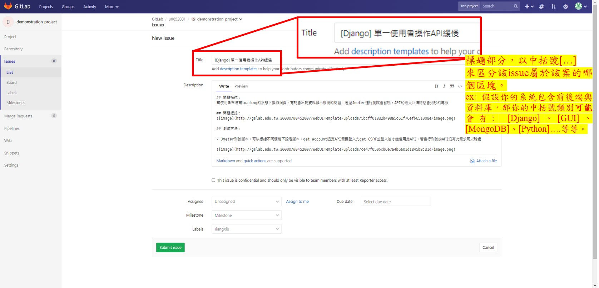

GitLab - Create issue
GitLab - Create issue
Issue控管? 老師說要控管Issue，我該如何下手?
相信大家在做專題抑或是專案，週會議上一定多多少少會聽到老師說: 「把這個列入issue」、「issue要控管好」、「這個不急，但一定要列入issue」…。
好了，問題來了，你怎麼控管issue? 先回覆: 收到! 然後把issue紀錄在進度報告PPT上然後使它逐漸淡忘在我們的生活中嗎? 還是說，只回了收到呢。
當然了，相信很多人都會將Issue紀錄在自己的進度報告PPT上，並且歸納統整好，而解決這個Issue後，也同步去修改PPT上的紀錄，但這會發生幾個問題:
未來要交接的人，看你的簡報看得很痛苦，根本找不到這些Issue對應到程式碼的哪裡。
寫在PPT裡，這些紀錄可能永遠都不會在被打開來看了，因為記錄實在太多了。
測試人員或協作開發的人不會知道你有這個Issue。
專案交接出去，這些Issue就是災難的種子。
GitLab Issues頁面教學
在我們的GitLab，抑或是公有的Github中，都有一個功能叫做’Issues’，它被用於記錄這個專案的Issue，並且提供了介面來管理，達到我們所說的「Issue控管」，並且，因為是在GitLab平台上，所有協作、交接、測試..，所有在專案團隊內的成員，都可以存取這些Issue，進而提升開發效率。
讓我們開始著手實作吧!
為專案設定好Issue控管頁面
1. 進入GitLab issue頁面
2. 進入Board
3. 建立Label
4. 修改Label顏色
修改顏色的目的是讓每個專案大家的Board都可以一致。
5. 顯示Label
6. 進入Labels頁面
7. 建立個人Tag
8. 輸入你的名子
開始建立Issue
1. new一個issue
2. 撰寫issue
3. issue寫法
注意了，Issue是有標準寫法的: Title會以中括號來表示該Issue是哪個module、package、Tools，抑或是環境的問題，而中括號後則簡要描述問題。 內文則分為: 1. 問題描述/目前方法: 你用什麼樣的操作觸發了該問題。 2. 問題紀錄: 這個問題的細節。 3. 解決方法: 你預期可以嘗試的解法。 4. 系統環境: 列出你發生這個問題的環境，可以是系統、套件… 5. …and more.
撰寫內文並不強制一定要符合哪些標題，只要你寫得讓協作、交接人與未來的你自己看得懂才是重點。
4. Tag你自己，讓大家知道是你測出的
5. 完成
Issue的控管
1. 開始管理你的issue
2. 開始進行
3. 版面說明
4. 解決了這個issue
找出解法後，直接回覆在issue下，格式同樣為Markdown語法。
解決方法回覆，必須包含： * 解決方法說明 (可以文字搭配截圖) * 解決後的細節 (可能包含了測試環境、測試細節、測試結果或任何你解決該issue的描述)
5. 搬動到Done
6. Close issue
當找到解決方案後，由你的專案負責人、合作夥伴或交接人等，進行測試。
若測試後確認解決方案可行，則在該issue中留言回覆測試結果與細節，並將其Closed；反之，若測試不通過，同樣留言回覆測試結果與細節，並將其回到Doing；抑或是測試過程中衍伸出其它issue，則另開新issue。